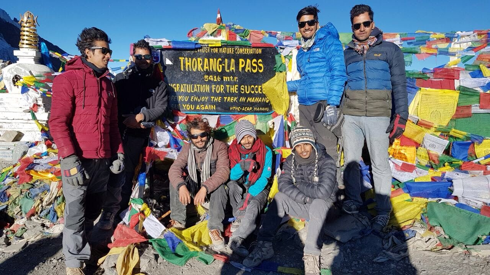

Here's a picture of me and my friends after we completed the hike to Thorangla Pass:
Thorangla Pass is a mountain pass with an elevation of 5,416 meters (17,769 ft) above sea level in the north of the Annapurna Himal in central Nepal. Thorangla is the highest point on the famous Annapurna Circuit, a 300 km (190 mi) route around the Annapurna mountain range. The pass is located on a trail which connects Manang district to the east with the Mustang district to the west.